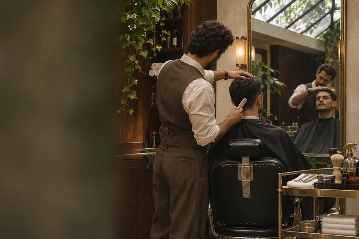
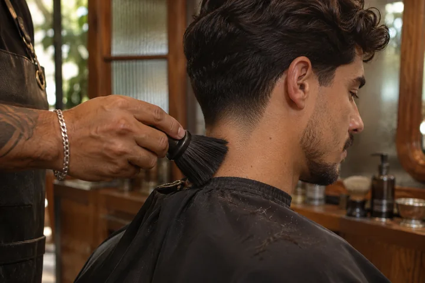

A conversa vem primeiro.
Conte como costuma pentear o cabelo e quanto tempo quer dedicar à finalização. Se trouxer uma foto, diga se o que gostou foi a lateral, o topo ou a forma geral.
O contorno aparece de perto.
Mostre onde o cabelo costuma pesar e onde prefere manter comprimento. Na barba, vale dizer se quer só alinhar ou redesenhar a linha.

Confira no espelho.
Olhe de frente e de lado. Antes de sair, pergunte como refazer a finalização do seu jeito.
Preparar atendimento